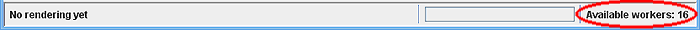
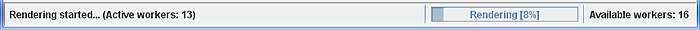
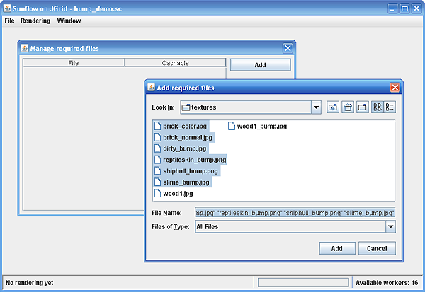

| Home |
| Documents |
|
- Introduction - Install & Run - User Manual |
| Download |
| Results |
After you installed and configured your distributed rendering environment you can start rendering your Sunflow scenes via the distributed rendering client (DRC). This client displays the rendered images with Sunflow's built in image display so it could be familiar from Sunflow's GUI application. This page uses the terminology and concepts introduced in the introduction, if you did not read it yet than I suggest to start with it first. |
The status bar |
| If you would like to render any scene the most important is to have at least one Compute Service available. You can check the number of discovered services via the status bar at the bottom of the GUI, or to be more precise it displays the number of worker tasks spawned to the discovered services, which is equal to the total processor number available:
 The status bar is an important part of the GUI during rendering too, since you can follow here the rendering progress:  From left to right the status bar contains the rendering status messages, the rendering progress bar and the display of available workers. |
| Rendering a simple scene |
Under simple I mean that the Sunflow .sc file contains no dependent files, like other .sc files, images, textures and so on. To open the desired scene file select File->Open from the menu or press Ctrl+O. A file chooser dialog opens and the current directory is set to the root directory of the HTTP server that you configured in the setenv file (see the install document for more details). You can select files only in this directory or subdirectories, otherwise you will get an error message. After you selected the file a small message dialog is displayed that asks whether the scene file can be cached or not. If you select YES then the Compute Services will use already downloaded local copies if available, otherwise download the file. If you select NO, the scene file will be downloaded before each rendering session. If you wish to render the same scene many times to experiment with different rendering settings then you should force download each time. If the file opened successfully you will get a message, just click OK and you can start rendering. Note that that the client application itself will not parse the file and will not build the scene objects. It only looks for the image dimensions (the image {...} block in the .sc file) if it is found that the open is successful. To render the scene with Sunflow's Simple renderer select Rendering->Simple from the menu or press Ctrl+Z. As its name says, this render is faster but produces only a preview quality image, if you are not sure about your settings select this one first. To render a scene with Sunflow's bucket renderer, which produces the full quality image, select Rendering->Bucket from the menu or press Ctrl+X. This type of rendering could take considerably more time to finish. During the rendering session you can follow the progress in the status bar as it is seen in figure 2, and also on the display as the rendered buckets are displayed on by one. The colored frame of yet unrendered buckets means that it was already dispatched to a remote service but the result did not arrive yet. When the rendering is finished a small message dialog displays the total rendering time, but you can also see it in the status bar. You can cancel the current rendering session by selecting Rendering->Stop from the menu or pressing Ctrl+C. During the rendering It is important to take into considerations that each rendering session involves a great number of network communication. If you render a large file, or it takes a long time for Sunflow API to build the scene objects then you can perceive a large delay between the start of the rendering and the return of the first rendered bucket. In the Window->Log Panel menu (or Ctrl+L) you can pop up the log panel, where you can get more detailed messages about the current progress of the rendering or possible failures. For a better performance if you have large scene files then separate them into a smaller one containing only the always changing settings, such as image parameters, shaders, lighting, camera etc. and into a bigger one containing the geometry that changes very rarely. This way the larger file can be marked as cacheable so after the first rendering only the small file will be downloaded. |
| Rendering scenes with external files |
If you have external files that the main scene file refers to, such as textures, bump maps, images, geometry data, object files etc., then in the current version you have to add them manually before the rendering session. Open the main scene file that should always contain the image {...} block and that is the one that is parsed first at the remote site selecting File->Open from the menu. To add external files that are required during the rendering select File->Add required files in the menu or press Ctrl+R. A dialog opens where you can manage the external files (figure 3). Here you can add and remove files and you can also mark files as cacheable or not. Cacheable files will be downloaded only once.  After selecting the required files you can start rendering as it was described in the previous section. |
| Rendering animations |
Animation is a series of scene files rendered one by one. First open the scene file of the firs frame in the File->Open menu then add the rest of the scene files selecting File->Add animation files from the menu or pressing Ctrl+A. A dialog opens that is very similar to the one where you added external files. Select the scene files of the frames, Toggle caching whether you want the files to download once or not. If the scene files require some external files then select File->Add required files. Before starting the rendering switch to animation mode by selecting Rendering->Animation, otherwise only the first frame (the main scene file) is rendered. Then you can start rendering in the same way as it was described in the previous sections. The rendered frames will be automatically saved in the client/frames directory as frameNNN.png where NNN is the frame number. (In future versions this will be configurable). |
| Before closing the client application |
|
When you decide to close the client application, before it you can save the rendered image under the File->Save image menu or pressing Ctrl+S. When closing the application either via File->Exit menu, Ctrl+E shortcut or on the window, the client will cancel all tasks spawned to the Compute Service. |
| Limitations and known issues |
|